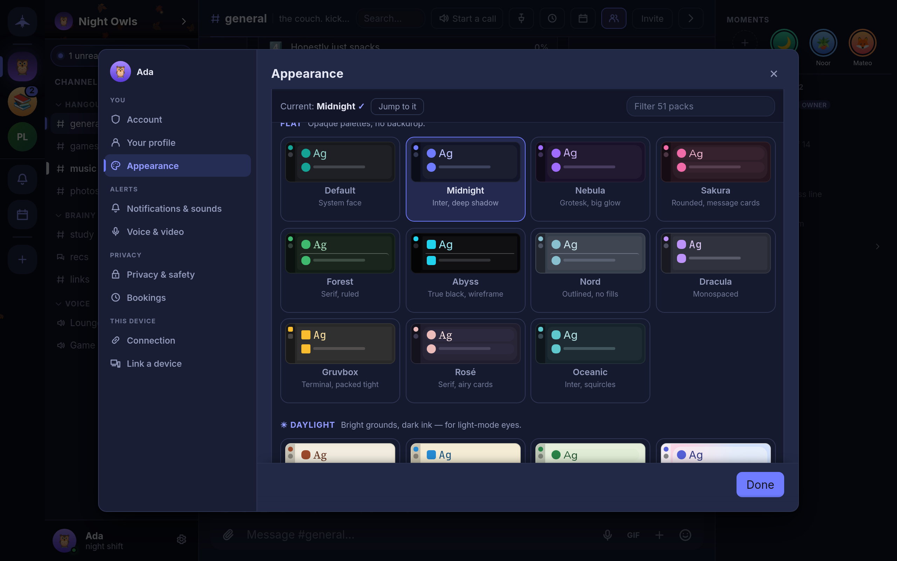

Settings and themes
What is in Settings and where to find it, with a closer look at Appearance: themes, theme packs, effects, color, shape, font and density.
Opening Settings
On the desktop, press Ctrl+, (Cmd+, on macOS), choose Open settings in the command palette (Ctrl+K), or select the gear next to your name at the bottom of the channel list. Settings opens on Account with every other page in a rail down the side. On a phone, Settings is a list of the same pages grouped under headings; tap one to open it.
Settings in Concord are kept per device. Your theme, sounds and microphone on your laptop do not change the ones on your phone. In the single-file build they are stored by the browser, so a different browser starts from the defaults. Guild-wide settings are not here; they are under Guild settings in each guild's menu (see Guilds and channels).
The pages
| Group | Page | What is there |
|---|---|---|
| You | Account | Who you are on this device, your safety net (Backup & restore and Recovery phrase), the installed version and updates, and Sign out (lock this device) |
| You | Your profile | Name, picture, banner, availability, status, bio, birthday, profile colors and your fingerprint |
| You | Appearance | Theme, theme pack, effects, color, shape, font, density, scale and clock |
| Alerts | Notifications & sounds | Do Not Disturb, sound volume and effects, call ringtone, alert words, system notifications, and on a phone Stay connected |
| Alerts | Voice & video | Microphone, speaker and camera, voice activity or push-to-talk, noise reduction, noise gate, microphone boost, call volume and a record-and-play-back test |
| Privacy | Privacy & safety | What leaves this device, typing indicators, deleted messages, message requests and blocked users, app lock, and erasing the device |
| Privacy | Bookings | Office hours and your public booking page |
| This device | Connection | Rendezvous server, fixed port, public DHT fallback, and the diagnostics panel |
| This device | Link a device | The QR code for adding another device |
The details live on the pages for each topic:
- Account, profile and passphrase: Accounts and identity
- Backups and the recovery phrase: Backups and recovery
- Notifications, Stay connected and push: Notifications
- Voice & video: Voice, video and screen sharing
- Privacy & safety: Privacy and encryption and Moderation and safety
- Connection: Getting started and Troubleshooting
- Link a device: Multiple devices
Privacy & safety at a glance
The What leaves this device group lists every feature that makes a request outside your conversations, each with its own switch: Link previews, Game title search, Game box art, GIF search, Hide my IP on calls and Rich presence. Typing indicators works both ways: turn it off and you stop sending them and stop seeing other people's. Under Deleted messages, Show deleted messages leaves a faint marker where a message was removed, and Empty trash erases the text kept for deleted messages. People holds Message requests and Blocked users; blocking hides someone on this device only.
Appearance
Settings → Appearance (also Open appearance in the command palette) is a list of sections, each showing its current value. Open one to change it. Changes apply as you make them.

Theme
Dark, Light or System. System follows your operating system's light or dark setting as it changes.
Theme pack
A theme pack restyles the whole app: its colors, and often its font, corner shape, avatar shape and message layout as well. The gallery has a filter box and a Jump to it button that scrolls to the pack you are using. Packs come in five sets:
| Set | What it is | Packs |
|---|---|---|
| Flat | Opaque dark palettes, no backdrop | Default, Midnight, Nebula, Sakura, Forest, Abyss, Nord, Dracula, Gruvbox, Rosé, Oceanic |
| Daylight | Light grounds with dark text | Paper, Solarized, Meadow, Porcelain |
| Animated | A moving backdrop behind translucent panels | Aurora, Synthwave, Cosmos, Molten, Prism, Monsoon, Fathom, Skyline, Eclipse, Daybreak, Dunes, Canopy, Datastream, Sonar, Lantern, Glacier, Vinyl, Storm, Blossom, Meridian, Bloom, Orbit, Radiant, Silicon, Uptime, Zellige, Atrium |
| Textured | A still color mesh behind translucent panels | Frost, Dusk, Grape |
| Effect-paired | Flat palettes designed as the ground for one effect | Tundra (Snow), Harbor (Rain), Observatory (Starfield), Hearth (Embers), Phosphor (CRT), Harvest (Leaves) |
Choosing an effect-paired pack does not turn its effect on; pick the effect separately. With an animated pack, Sweeping highlights turns the band of light that crosses the window on or off.
Effects
An overlay drawn over the app: None, Snow, Rain, Starfield, Embers, CRT or Leaves.
Color
The accent color used for buttons, highlights and links. Pick one of the preset swatches, or the hollow swatch, which follows the primary color of your profile theme (see Your profile). A preset overrides it on this device only.
Shape, font and density
| Section | Options |
|---|---|
| Shape | How rounded panels, buttons and fields are: Theme (whatever the pack uses), Sharp, Soft or Round |
| Font | Theme, System, Inter, Grotesk, Serif, Rounded, Mono, Legible, Cyber or Comic. Every font is built into the app; none is downloaded. |
| Density & scale | Compact, Cosy (the default) or Comfortable message spacing, and a UI scale slider from 80% to 150%. Ctrl+=, Ctrl+- and Ctrl+0 change the scale from anywhere. |
Flair and clock
Flair has two switches: Use guild colours, which tints the app with the hue of each guild's banner while you are in it, and Seasonal touches, which adds snow in December, petals in spring and leaves in autumn. Clock sets how message times are shown: Automatic (following your locale), 12-hour or 24-hour.
Language
The interface is in English. There is no language setting. Dates and times follow your system's locale.